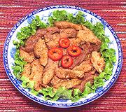

|
Pork with Red ChiliChina - Shanghai | ||||
| Serves: Effort: Sched: DoAhead: |
6 app ** 35 min Prep |
This is Shanghai street food. It's quite spicy from both chilis and Sichuan pepper, so I have listed it as an appetizer. our home gas burners aren't hot enough to really do street food, but frying in two batches works pretty well. | |||
|
1-1/4 2 2 ------ 1 1 2 1 1 1/2 ------ 2 |
# in cl --- t t T T t t --- T |
Pork, lean Ginger Root Garlic -- Sauce Sichuan Pepper (1) Chili Flakes (2) Rice Wine (3) Black Vinegar (4) Soy Sauce Salt --------- Oil (5) |
Prep - (25 min)
|